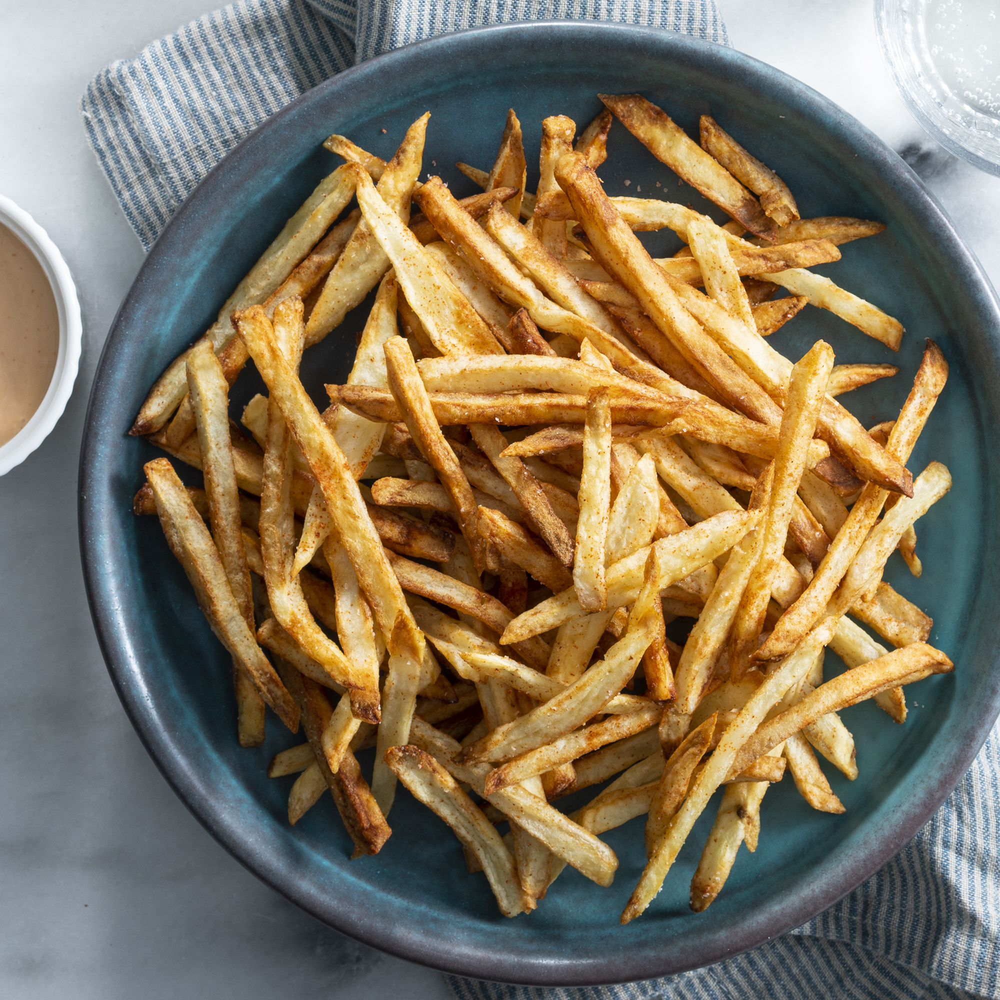

Home
Home Fries

Classic fries, goes great with hot dogs, burgers, or just on their own
Ingredients
- 400g-1kg Any style potato
- 1 TBSP Oil of your choice (something with a higher smoke point like peanut oil is best)
- 1 Tsp Salt
- [Optional] Various seasonings like oregano, thyme, paprika or chili powder add flavour too!
Instructions
- Slice all potatoes into whatever uniform shape you'd like (cubed, shoestring, wedges etc.)
- simmer in a pot of water on low to low-medium for a few minutes, checking frequently
- stick a knife or fork through, should retain its shape but give without crumbling like cold butter
- strain and toss in a bowl with the oil and salt until combined
- Ideally lay them out on a baking pan lined with wax paper or foil, deeper pans work too
- Bake @ 400F for 30 min, flipping halfway, works in air fryer too
- let stand for 5 minutes and serve